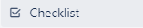
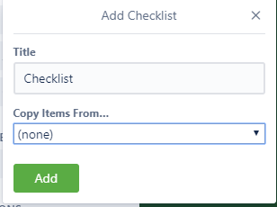
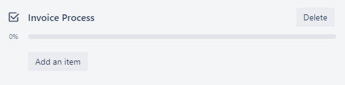
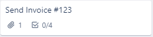

Create a Checklist
A checklist helps visualize a larger task into its components and substeps.
- Click the Card

- Click Checklist 
- Title the checklist and click Add 
You can reuse a previously created checklist with the Drop Down
Menu
-
Once the checklist is created, add items to it
- In the checklist section of the card click Add an item 
- Type the item name and click Add
- Optional: Assign the item to a team member by clicking @ and typing their name to tag them. This sends them a notification.
The updated card
